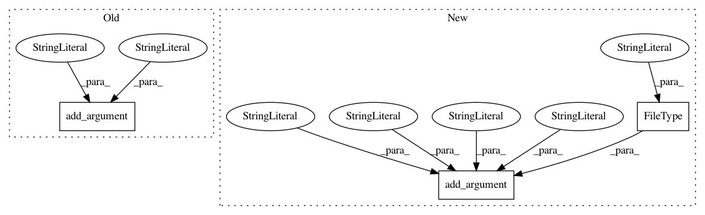

791652b1422e6badf67a230eae8e49b12487950b,hicexplorer/hicQuickQC.py,,parse_arguments,#Any#,18
Before Change
parserOpt.add_argument("--restrictionSequence", "-seq",
help="Sequence of the restriction site. It is highly recommended to set this parameter to get a good quality report.")
parserOpt.add_argument("--danglingSequence",
help="Sequence left by the restriction enzyme after cutting. Each restriction enzyme "
"recognizes a different DNA sequence and, after cutting, they leave behind a specific "
""sticky" end or dangling end sequence. For example, for HindIII the restriction site "
"is AAGCTT and the dangling end is AGCT. For DpnII, the restriction site and dangling "
"end sequence are the same: GATC. This information is easily found on the description "
"of the restriction enzyme. The dangling sequence is used to classify and report reads "
"whose 5\" end starts with such sequence as dangling-end reads. A significant portion "
"of dangling-end reads in a sample are indicative of a problem with the re-ligation "
"step of the protocol. It is highly recommended to set this parameter to get a good quality report.")
parserOpt.add_argument("--lines",
help="Number of lines to consider for the QC test run.",
required=False,
default=1000000,
After Change
"Hi-C libraries.",
metavar="FOLDER",
required=True)
parserRequired.add_argument("--restrictionCutFile", "-rs",
help=("BED file(s) with all restriction cut places "
"(output of "findRestSite" command). "
"Should contain only mappable "
"restriction sites. If given, the bins are "
"set to match the restriction fragments (i.e. "
"the region between one restriction site and "
"the next). Alternatively, a fixed binSize can be defined instead. "
"However, either binSize or restrictionCutFile must be defined. "
"To use more than one restriction enzyme, generate for each one a restrictionCutFile and list them space seperated."),
type=argparse.FileType("r"),
metavar="BED file",
nargs="+",
required=True)
parserRequired.add_argument("--restrictionSequence", "-seq",
help="Sequence of the restriction site, if multiple are used, please list them space seperated. If a dangling sequence "
"is listed at the same time, please preserve the same order.",
type=str,
In pattern: SUPERPATTERN
Frequency: 3
Non-data size: 3
Instances
Project Name: deeptools/HiCExplorer
Commit Name: 791652b1422e6badf67a230eae8e49b12487950b
Time: 2020-07-07
Author: wolffj@informatik.uni-freiburg.de
File Name: hicexplorer/hicQuickQC.py
Class Name:
Method Name: parse_arguments
Project Name: etal/cnvkit
Commit Name: 85400dbc865f2d8e632242153fa4576e711f104d
Time: 2016-10-05
Author: eric.talevich@gmail.com
File Name: cnvlib/commands.py
Class Name:
Method Name:
Project Name: etal/cnvkit
Commit Name: 8c9c03c9c7814a9d1d76e87788766ddc36ef7239
Time: 2015-11-07
Author: eric.talevich@gmail.com
File Name: cnvlib/commands.py
Class Name:
Method Name: